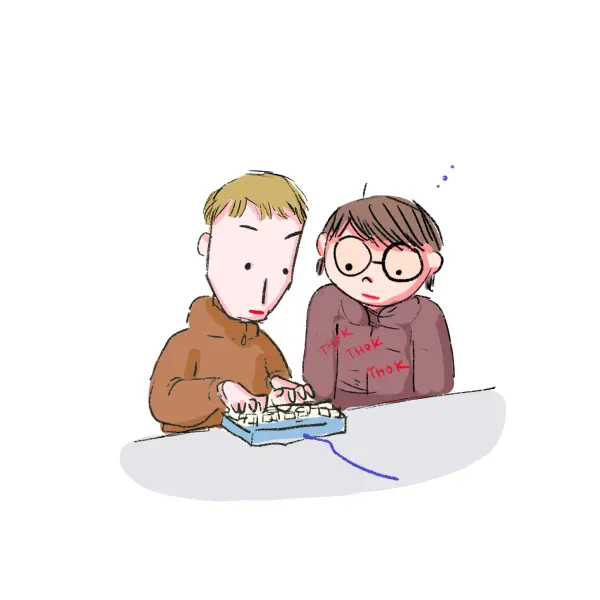

Keyboard Layouts
Alternate keyboard layouts to QWERTY have been developed over the years to break free from the traditional typewriter-based system. These layouts propose to reduce unnecessary finger movement as well as improve both typing speed and ergonomics. After suffering a moderate concussion from unfortunate cabinet door placement (we’ve all been there), I felt perhaps it was a good time to learn something new.
I started off with Colemak. It was created by Shai Coleman in
2006, and was designed with QWERTY as a base, retaining the positions
of most non-alphabetic characters and shortcuts. This is commonly
cited as making it easier to adopt than Dvorak for most. It places the
most frequently used letters of English on the home row.
I found that base Colemak placed many important keys in the middle two
columns. This seems to be a pretty common complaint with this layout.
Having to repeatedly move your index fingers around can be extremely
taxing.
Workman was developed by programmer OJ Bucao in 2010. I had heard a lot of praise about how it solved many of the uneven finger distribution issues within colemak. It employs an opinionated approach to finger movement, based on the idea that the index finger preferes to curl inwards rather than outwards. More info on this philosophy here.
